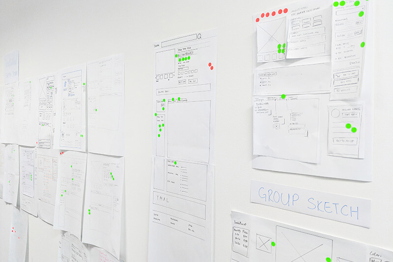

Accelerated Mobile Page
Shopee
In order to help our users browsing service in south east area, especially in Indonesia, there are not enough internet infrastructure to support friendly web service, we have to make it better.
So why did we do this?
There were many reasons that drove this project.
Business: We wanted to reduce the drop-off rate of web pages, and increase discoverability from Google search.
Technology: The previous app design and architecture was difficult to fit low-bandwidth internet environment like Indonesia. It need to load a page around 11 seconds.
User’s pain points: There is too much information for many South-east-Asians use the older smartphone with small screen size. A lot of our users in Indonesia are hard to filter the more meaningful thing they care.
Design Process
- Research
Data analytics, User survey.
- Design sprint
User discovery, Solution Discovery.
- Execution
UI/UX design, Prototype, Project management
- Validation
Google analytics, Business intelligence
Research
Data Analytics
Via Google analytics, we pick some statistics up and figure out what might be helpful to measure success and pain point.
There are some data we might track or enhance.
- Page traffic
- Bounce rate
- Page load time
- New users sessions
- Average view time

Base on the above data, we found the product page which has too long load time, high bounce rate for lots of new users than other pages. In E-commerce, the product page is the one of the most important pages for conversion rate. So we decide to improve this page for higher priority, and also make a product roadmap to summarize that maps out the vision and direction.
Design Sprint
A design sprint is a five-step framework that helps teams arrive at clearly defined goals, deliverables and uncover key learnings quickly through:
- Ideation
- Rapid prototyping
- User testing
Affinity Mapping
Each participant watched user interview videos from 1 of 6 different user segments and came prepared with their observations written on post-it notes.
Affinity mapswere then used to organize and categorize these many different data points, from which common themes and relationships surrounding the observations emerged — even uncovering previously hidden ones.
Solution Discovery
The second half of the day focused on devising a design that met different user groups’ needs. To do this, participants were regrouped so each group had a mix of user personas.
Card Sorting
Teams were given cards with components of Shopee’s digital interface and tasked to first classify, then sort according to importance. The open card sort method allowed participants to explore each others’ conceptions of user mental models. From this, teams were able to organically determine their design guidelines for the next phase of the sprint.
And here is the output:
- Product image
- Basic product information (e.g product name, price)
- Product details
- Comments sections
- Rating section
- Shipping details
- Promotion information (e.g voucher)
- Seller info
- Wholesale details
- Recommendation
Sketch Storming
Participants first put pen to paper and individually sketched their ideal product, then sketched a single mock-up as a group. The insights that emerged from the diverse set of participants will no doubt be invaluable to future product development and innovations.
Execution
Wireframe
Base on the sketch storming of design sprint, we could start from product detail page. My goal is to solve all the problems and implement the idea of design.
First Screen
According to the card sorting and user survey, beyond the images, product page needs to give high-level information of the product right off the bat.
That information includes
- Product title
- Price
- Features and components
- CTA
- Customization options
Ideally, all of this information lives above the fold. That isn’t always possible (in fact, it is rarely possible). The solution here is to extraction the most meaningful wording of each service. Like voucher, via interview survey, there are few people need it, but which they actually need. We make it as a small block, only display the discount percentage, if they really like to know in detail (expire date, min speed, capped), they can click to see more in detail.
Fourth Screen: Recommendation
- From the same shop
- Similar products
- You may also like
There are 3 recommendation sections, We put these under the product information, it can help users find out more ideal, similiar, cheaper products. For You May Also Like section, it relate the users browse history and current product, make people more choice.
Error Page
Error message text is a unique situation in the world of error messages, but definitely not rare. The default message provided by a user’s browser can often be unhelpful and generic.
To create the best error messages for a internet issue, it’s important to know what type of website error this is. The cause could be:
- No internet connection
- The network is busy
- Something went wrong
Base on different scenario, we have to design suitable wording and visual to help users process.
Visual Design
Instead of using heavy text for an overview (this is *not* the description), we use colors, fonts, and icons. And we could only fetch some representative signal for that information.
Technical Solution
Improve Loading Speed on Mobile Devices
We launch the AMP project for this version which is an open-source initiative aiming to make the web better for all. The project enables the creation of websites and ads that are consistently fast, beautiful and high-performing across devices and distribution platforms.
In a highly competitive e-commerce market, it’s critical to provide the best user experience (UX) for customers, including for those using low-end smartphones on 3G or 2G connections. As Shopee mobile traffic grew, the company saw an opportunity to acquire new users and improve mobile conversions through this valuable channel.
Product Management
Due to this project was new and start up with designers and developers for the beginning, I raise myself to be a product manager in this project to work with each team:
- Design team
- Product team
- Front end developer team
- Backend developer team
- SEO team
- QA(Quality assurance) team
- Local country team (7 countries)
Documentation
I created and maintaind some documents like PRD (Product Requirements Document) containing all the requirements to a certain product. It is written to allow people to understand what a product should do.
- Product Requirements Document (PRD)
- Tracking point requirement
- Design spec
- Test case
Validation
We use Google Analytics to track the performance with internal data to validate the result.
Next Step
According to these good result, as a designer, I have to plan the overall product roadmap. We are planning to do next for Category page